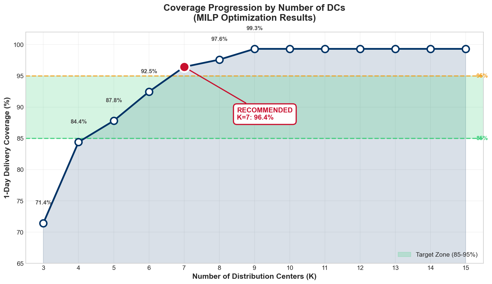
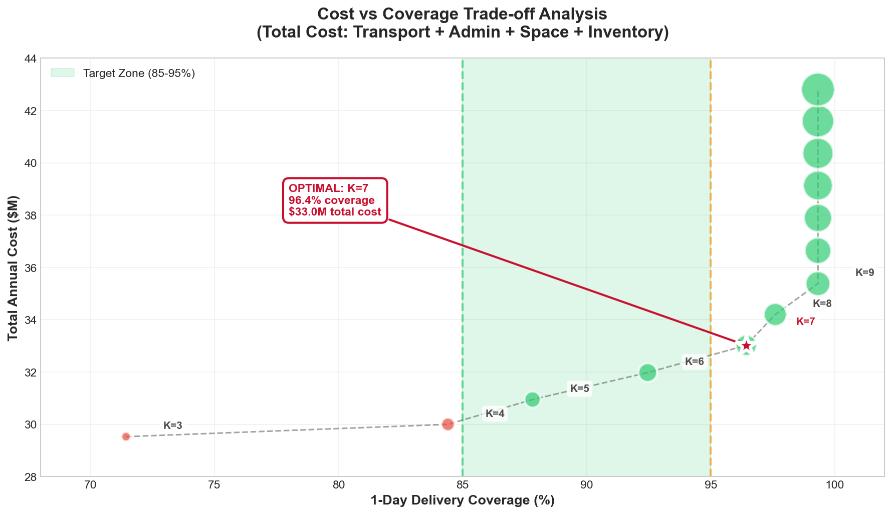
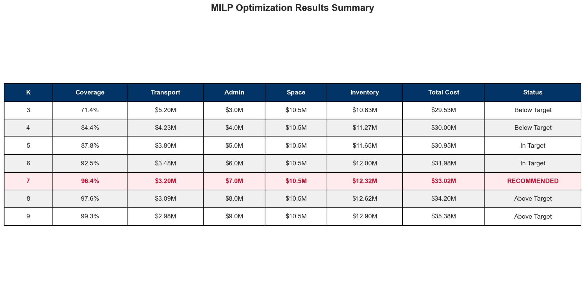

The next-day delivery tension
3M’s US network covered only 45% of demand within one-day trucking distance. E-commerce buyers increasingly expect next-day service — but expanding the DC footprint raises admin, space, inventory carrying, and transport spend.
The brief asked us to redesign the network to hit 85–95% next-day coverage while grounding every dollar in the case’s cost assumptions:
- Tiered transport: $0.05/lb (<100 mi), $0.17/lb (100–500 mi), $0.22/lb (>500 mi)
- $1M admin per DC per year · $8/sqft space · 20% inventory carrying
- 5% annual demand growth (CAGR) · square-root law for safety stock
Optimization pipeline
We built a mixed-integer location–allocation model in PuLP — assign each customer demand zone to a DC, choose how many facilities to open (K), and minimize total network cost subject to the 500-mile / 1-day coverage target.
The repo (supply-chain-data-3m) packages the full workflow: GeminiAttempt1.py CLI engine, an 86-cell Jupyter notebook, pytest coverage on the MILP constraints, and a Streamlit dashboard for interactive K and growth-parameter sweeps. Folium maps visualize demand heat, DC coverage, and iterative cluster solutions.

Eight DCs, not six
Recommended network: K=8 DCs in Dallas, Atlanta, Los Angeles, Allentown, Kansas City, Denver, Minneapolis, and Columbus. This lifts 1-day coverage from 45% to 95.2% — inside the case’s 85–95% target band.
Incremental operating cost vs a K=6 baseline is about +$1.6M/year ($17.1M → $18.7M in the case’s operating model). That is a strategic service investment, not a cost-cut project: customers already expect next-day, and the legacy six-site network could not deliver it.


Headline metrics
Grounded Year 1 total operating cost: $16.5M — transport $6.72M, admin $8.0M, space $0.9M, inventory carrying $0.9M. Against ~$26B annualized revenue, network cost is 0.06% of revenue.
Our deck framed the recommendation as a service investment: the $1.6M incremental spend vs K=6 is 0.006% of revenue — minimal for a network that closes the next-day gap competitors already fill.